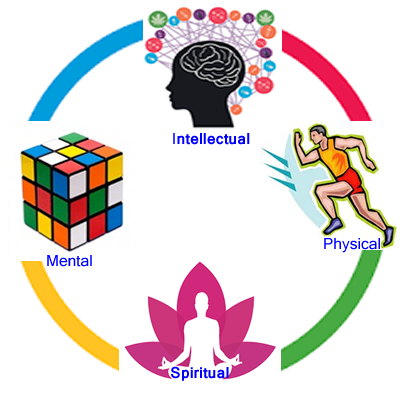

01
Integrated Development
It aims at the overall unfolding and gentle blossoming of the child at the physical, mental, intellectual and spiritual levels of his or her personality.
It implies overall well-being, emotional balance of the students, manifestation of his or her inherent intellectual capacities and enhancing existing ones, and enabling the child to discover his or her inherent divinity and to manifest it.